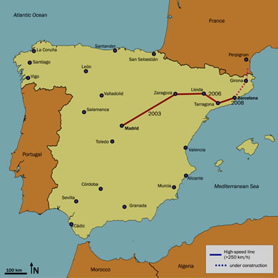

El AVE Barcelona-Madrid transportó 5,8 millones de viajeros en su primer año
Agencia EFE
Viernes, 20 de febrero 2009 
El AVE (Alta Velocidad Española) Barcelona-Madrid transportó 5,8 millones de viajeros en su primer año de funcionamiento. Durante el mismo año han circulado 19.354 trenes con una ocupación promedio de 63% y una puntualidad del 99,18%. La administración de trenes (Renfe) anticipa que aun con la crisis económica, este año se registre un aumento de pasajeros de entre el 10 y el 15%.
La secretaria de Estado de Infraestructuras, Josefina Cruz, ha señalado que el AVE (tren de alta velocidad) Barcelona-Madrid era un servicio "muy esperado" y sólo en un año se ha colocado a la cabeza de la alta velocidad en España, ya que ha superado excesivamente` la frecuencia del servicio del AVE Madrid-Sevilla, que funciona desde 1992.
Los usuarios
En diciembre del año 2007, el 88,2% de los viajeros del corredor Barcelona-Madrid utilizaba el avión, frente al 11,8% que viajaba en tren, pero en enero de este año los pasajeros que viajan en avión son el 51,8% y los que lo hacen en tren, un 48,2%.
Josefina Cruz ha explicado que tras la llegada del AVE a Barcelona, el 20 de febrero del 2008, el tren ha incrementado un 195% sus viajeros entre Barcelona y Madrid, mientras que el avión ha perdido un 28,6%, además, el número de viajeros que utilizan estos dos medios de transporte de Barcelona a Madrid ha aumentado en un 1,8% en el último año.
El AVE Barcelona-Madrid inició con diecisiete frecuencias diarias en cada dirección y ahora alcanza veinticinco frecuencias por dirección. Diariamente se ofrecen 13.000 asientos en total.
Los usuarios del servicio AVE Barcelona-Madrid han valorado el servicio en 8 puntos sobre 10. Además, el porcentaje de viajeros satisfechos o muy satisfechos es de 79%. El 61,2% de los viajeros del AVE son hombres, con una edad media de 44,4 años, un 61% viajan por trabajo y un 40% de los pasajeros hacen al menos un viaje cada dos semanas.
Planes de expansión 
La vicepresidenta ha destacado que España será en 2020 el país de Europa con más kilómetros de trenes de alta velocidad. Para lograr la creación de más trenes, se requerirá un esfuerzo técnico, y muchos recursos económicos y humanos.También, la vicepresidenta ha anunciado que se ha dado luz verde a cinco acuerdos de obras de alta velocidad en cinco comunidades autónomas, Andalucía, Galicia, Castilla y León, País Vasco y Comunidad Valenciana, que permiten avanzar en las líneas AVE en marcha con una inversión total de más de 129 millones de euros.